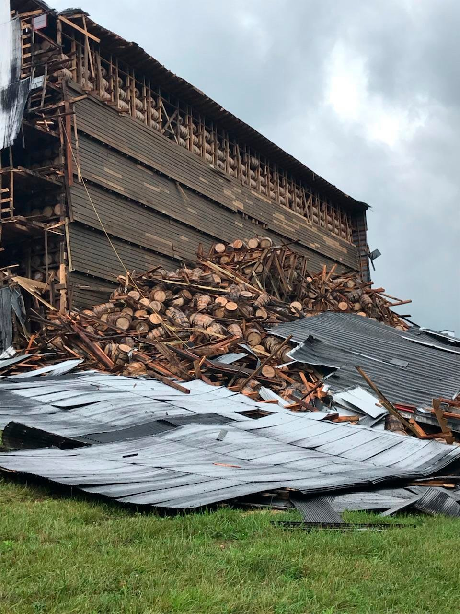

Warehouse no.30 on the button 1792 distillery campus in barrles were amid the rubble.
Creditchief Billy Mattingly/Bordstown Fire Department,via Associated press
ByMaya Salam June 22,2018
Warehouse no.30 on the button 1792 distillery campus in barrles were amid the rubble.
Creditchief Billy Mattingly/Bordstown Fire Department,via Associated press
ByMaya Salam June 22,2018
Bourbon is flowing in Kentucky,but dont grab a glass.
Thousands of full Barrelsof bourbon,and possibly other spirit,came Crashing down when a storare warehouse in Bardstown,ky.,partly collapsed on friday
The collapse at the Barton 1792 Distillery campus was called in to emergency services about 10:55 a.m., Milt Spalding, an emergency services director in Nelson County, said during a news conference on Friday. The structure houses about 20,000 barrels, and an aerial video showed half of the building demolished. About 9,000 barrels were amid the rubble, Mr. Spalding said. Each barrel holds 53 gallons.